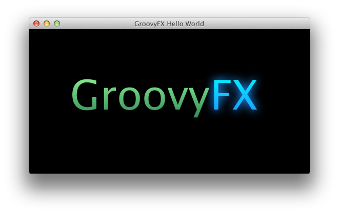

GroovyFX provides a Groovy binding for JavaFX 2.0.
GroovyFX is an API that makes working with JavaFX in Groovy much simpler and more natural. GroovyFX is focused on exploiting the power of the Groovy Builder pattern to make JavaFX development simpler and more concise than what is possible in Java. GroovyFX also leverages Groovy's powerful DSL features and AST transformations to eliminate boilerplate, making GroovyFX code easier to write and, just as importantly, easier to read.
GroovyFX provides the SceneGraphBuilder object, which supports all the controls, shapes, gradients, effects, and other objects in the JavaFX 2.0 API such as enumerations and colors. Additionally, Groovy closures can be used as event handlers, leading to clean and concise code.
A simple and complete "Hello, World" program is shown below. The general pattern for a GroovyFX application
is to define the JavaFX components within a Groovy closure that is passed to the static start
method of the GroovyFX class. Inside this closure, we instantiate our SceneGraphBuilder
and use it to start creating our scene graph nodes.
Each JavaFX class has a corresponding SceneGraphBuilder node. For example, the JavaFX
Stage class becomes the stage node. All SceneGraphBuilder node
names are exactly the same as their JavaFX counterparts with the start of their class names converted to
lowercase letters.
import groovyx.javafx.GroovyFX
import groovyx.javafx.SceneGraphBuilder
GroovyFX.start {
def sg = new SceneGraphBuilder();
sg.stage(title: "GroovyFX Hello World", visible: true) {
scene(fill: black, width: 650, height: 450) {
hbox(padding: 80) {
text(text: "Groovy", style: "-fx-font-size: 80pt") {
fill linearGradient(endX: 0, stops: [palegreen, seagreen])
}
text(text: "FX", style: "-fx-font-size: 80pt") {
fill linearGradient(endX: 0, stops: [cyan, dodgerblue])
effect dropShadow(color: dodgerblue, radius: 25, spread: 0.25)
}
}
}
}
}
The result of running this program is shown in the image below.
GroovyFx is licensed under the Apache License, Version 2.0.
You can download this project in either zip or tar formats.
You can also clone the project with Git by running:
$ git clone git://github.com/groovyfx-project/groovyfx